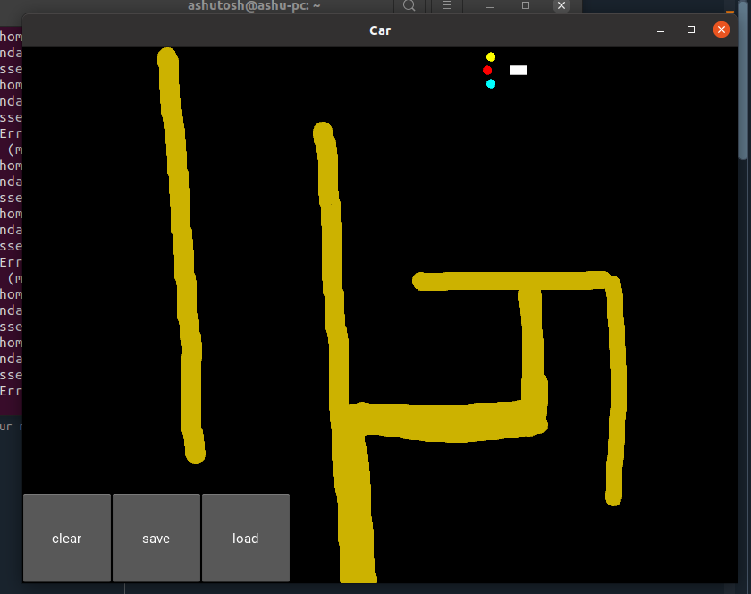
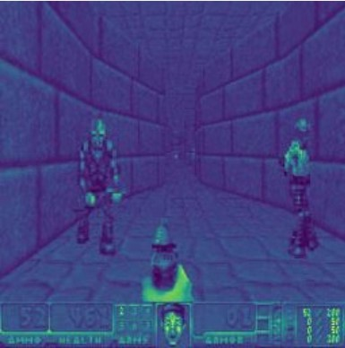
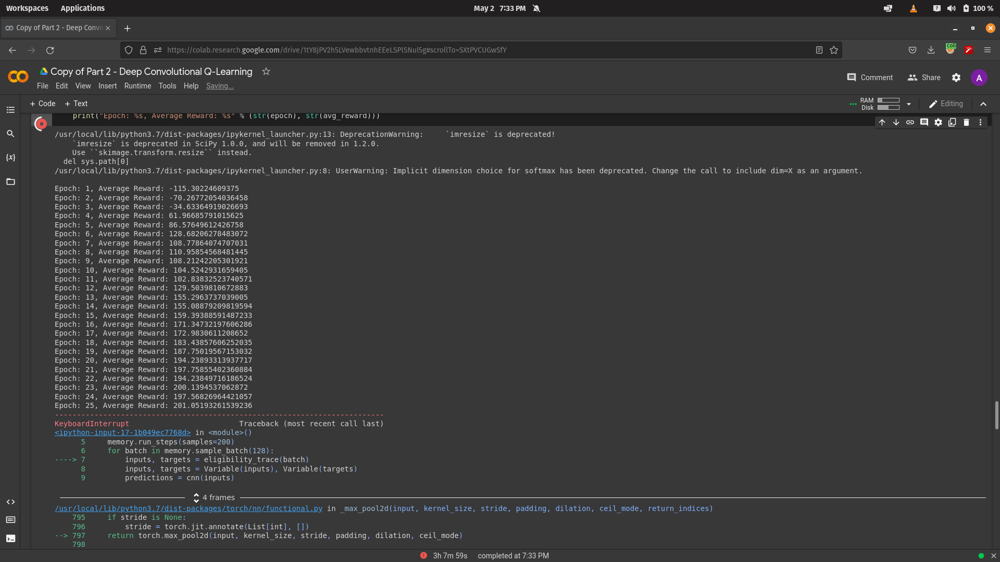

MNNIT ALLAHABAD / UNDERGRADUATE TEAM PROJECT
Deep Q-learning
for driving and Doom
An undergraduate team project using PyTorch to train reinforcement-learning agents in a 2D driving simulator and a visual Doom environment.


Method
We used deep Q-learning to estimate the value of available actions and improve behavior through interaction with the environment. The study covers experience replay, fixed target networks, and the balance between exploration and exploitation.
The two experiments changed how the state was represented: compact sensor and goal information for driving, and visual features from game frames for Doom.
Driving simulator
State and actions. The driving agent used sensor signals and orientation toward its goal to choose between going straight, turning left, and turning right.
Reward design. Moving toward the goal earned a positive reward; moving away or driving onto sand incurred penalties.
Increasing difficulty. Four test layouts progressed from an open map to roads, obstacles, and a more challenging road. After the hardest layout remained difficult to learn, the team increased network depth and exploration.
Doom experiment
The Doom experiment added convolutional layers to learn visual features from the game screen. The agent selected among seven movement, turning, and attack actions, with rewards tied to progress through the scenario and a penalty for dying.
The report records training in Google Colab and an example run with rising average rewards. It also identifies further training as a next step.
See the recorded training output

Training output from the project report.
Observations
- Driving used sensor readings and goal orientation; Doom used convolutional features from game frames.
- The hardest driving layout prompted changes to network depth and exploration.
- The displayed Doom training run showed improving average rewards. Further training was identified as a next step.
Team and supervision
Team: Ashutosh Kumar, Akshay Mall, Gidijala Uday Srinu, and Ashutosh Acharya.
Supervisor: Prof. Rajesh Tripathi, Computer Science and Engineering, MNNIT Allahabad.
Project title: Reinforcement Learning Based Agent to Solve Complex Environments. The screenshots and experiment descriptions on this page come from the team's project report.